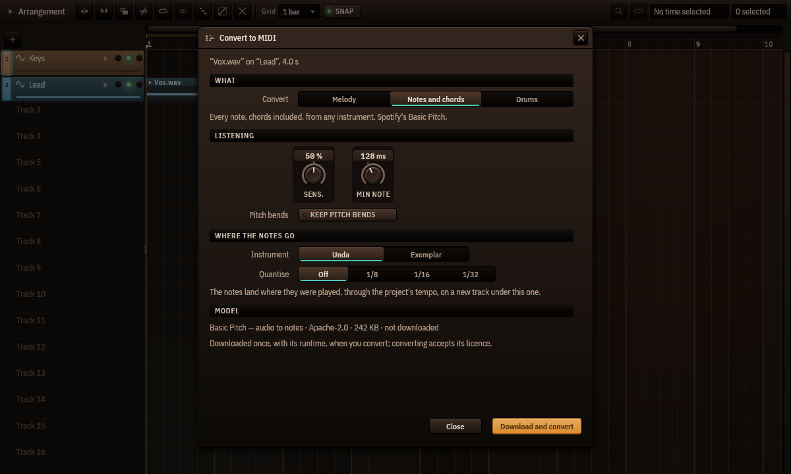

Convert audio to MIDI
Cantus 0.1.0-beta.9 and later · Leer en español
Cantus turns an audio clip into notes you can edit, play with any instrument, quantise or print: a sung or hummed melody, a piano part with its chords, a drum loop.

Convert a clip
- Right-click an audio clip in the arrangement ▸ Convert to MIDI…
- Choose what to convert: - Melody — one note at a time: a voice, a solo, a bass line. Cantus's own pitch tracker (the pitch editor's): nothing to download. - Notes and chords — every note, chords included, from any instrument. Spotify's Basic Pitch model. - Drums — kick, snare, toms, hi-hat and cymbals, written on the General MIDI drum map for Pulsus.
- Adjust how it listens: - Sensitivity (notes and chords, drums) — higher finds fainter notes (and more wrong ones); 50 % is each model's own default. Melody has none: its tracker decides by itself what is sung. - Shortest note — shorter notes are dropped (128 ms by default). - Keep pitch bends — each note keeps its bends and vibrato as its own bend curve (the piano roll's per-note expression), even notes that overlap. - For drums, Write chooses the classes. Kick, snare and hi-hat are on; toms and cymbals are on only when the drum model is installed, because without it they are often wrong.
- Choose where the notes go: Unda, or Exemplar with its first factory sound (Pulsus's studio kit for drums), and Quantise — off by default, so the notes stay where they were played.
- Convert. The notes arrive on a new track under the clip's, in a MIDI clip that starts and ends with the audio clip. It is one step of Undo.
The notes follow the clip as it plays: through the project's tempo and its tempo changes, a warped clip's warp markers, a reversed clip backwards, and a looped clip on every loop — each loop where it really sounds, after a tempo change too, the last one cut where the clip ends.
The models
Notes and chords needs Basic Pitch (230 KB, Apache-2.0, by Spotify) and the ONNX Runtime (about 15 MB, MIT, by Microsoft), downloaded once the first time you convert — the dialog shows the model, its licence and its size before it downloads, and converting accepts its licence. Melody and Drums work with nothing downloaded.
For better drums, Download the drum model in the dialog: Magenta's Onsets and Frames Drums (6 MB, Apache-2.0), trained on 444 hours of real drumming. It writes every class; Cantus's own detector still says which hi-hats were open.
Everything runs on your computer, in a helper process: if a model fails, Cantus goes on.
How well it works
Measured with the field's usual rule (a note counts when it starts within 50 ms of the real one at the right pitch):
- Melody: about 8 notes in 10 on melodies played by Cantus's instruments and on solo recordings of violin, horn, clarinet, trumpet, cello and saxophone.
- Notes and chords: about 7 in 10 on chamber-music recordings, 6 in 10 on our instruments' chords; exactly the notes Spotify's own Basic Pitch writes.
- Drums on drum recordings: kick 96 %, snare 85–89 %, hi-hat 65 %; with the drum model, hi-hat 74 %, cymbals 64 % and toms 44 % (toms are the hardest; check them).
Drums work best on a drum track or a drum stem. On a whole mix, turn on Separate the drums first: Cantus takes the drums out with HT-Demucs (installed with Separate stems…) before it listens, which brings a mix almost to a drum track's accuracy (about a minute for a 3-minute song). The tonewheel organ (Organum) does not transcribe well.
For agents
Agents connected through Cantus's MCP server have the same conversion as the tool audio_to_midi: it asks like any edit, names the clip and track it converts, and never downloads a model.